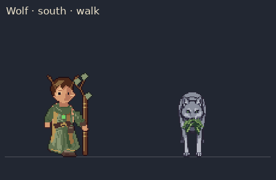
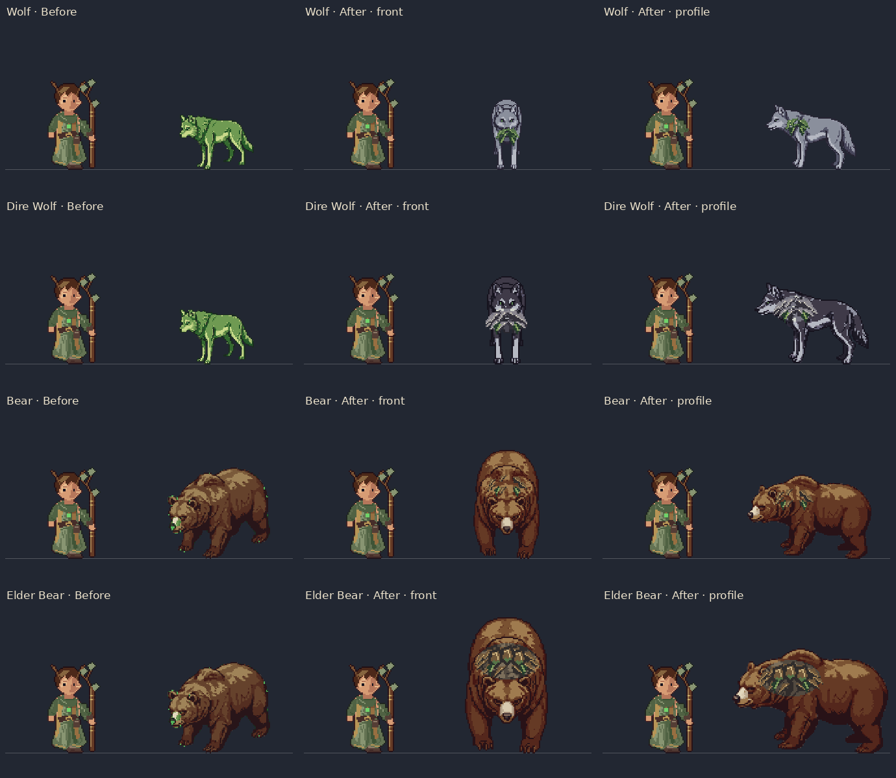
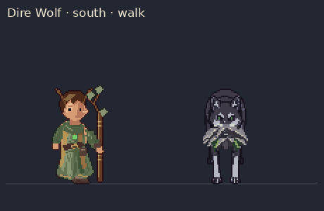
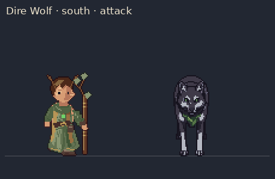
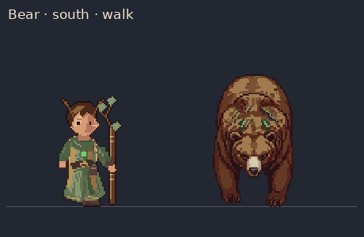
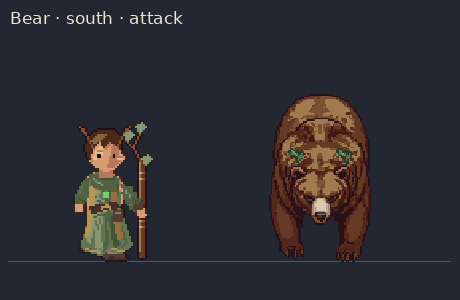
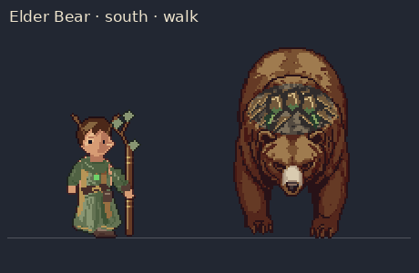
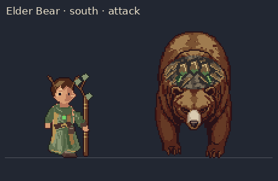

Wolf

Source-atlas inspection at the same 4× game magnification. Each animation cycles through all eight real compass views. Idle and walking feet stay at their declared ground anchor; attack poses retain their authored motion. The main gallery contains the actual native game captures.
Native before-and-after gallery







